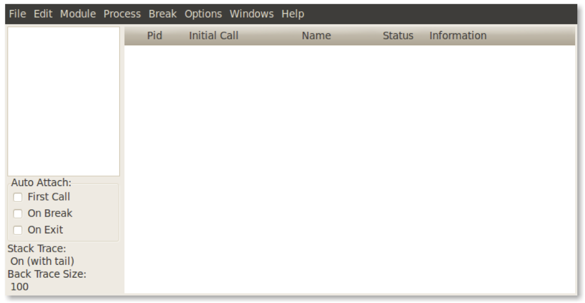
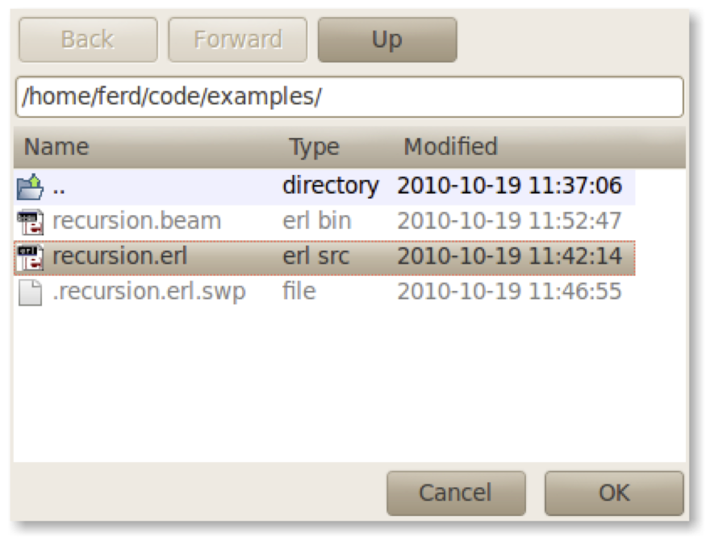
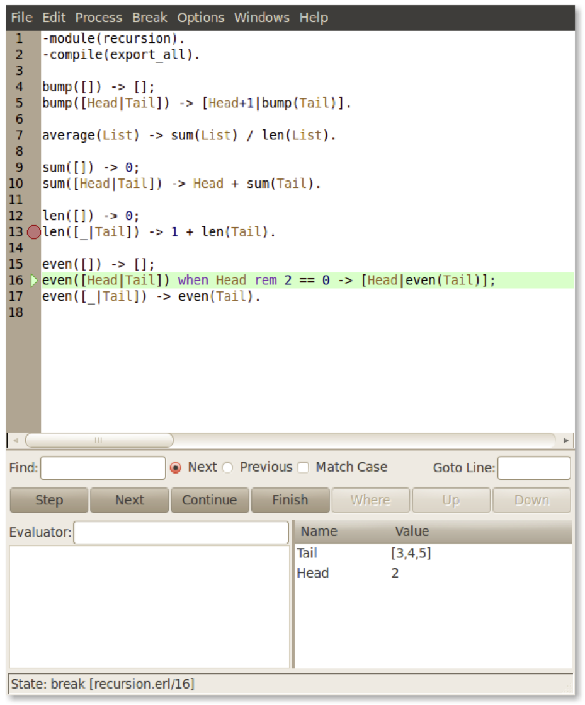

number(Num) when is_integer(Num) -> integer; number(Num) when is_float(Num) -> float; number(_Other) -> false.
Sequential Erlang
Erlang Solutions Ltd.
Overview: sequential Erlang I
Sequential Erlang I
Conditional Evaluation
Guards
Recursion
Sequential Erlang II
Sequential Erlang III
Conditional Evaluation: case
Conditional Evaluation: case
case <expression> of
Pattern1 ->
<expression 1>,
<expression 2>,
...
<expression N>;
Pattern2 ->
<expression 1>,
<expression 2>,
...
<expression N>;
_ ->
<expression 1>,
...
<expression N>
end
One branch should always succeed
Using an unbound variable or '_' ensures that the clause will always match
The _ clause is not mandatory
An exception is raised if no clause matches
Returns the value of the last executed expression
Defensive Programming
convert(Day) ->
case Day of
monday -> 1;
tuesday -> 2;
wednesday -> 3;
thursday -> 4;
friday -> 5;
saturday -> 6;
sunday -> 7;
Other ->
{error, unknown_day}
end.
Defensive programming: program in the convert function for the error case or …
… let it fail here by deleting the Other clause.
This will raise an exception
The caller will have to handle the error that they have caused.
Guards
factorial(N) when N > 0 ->
N * factorial(N - 1);
factorial(0) -> 1.
This is NOT the same as...
factorial(0) -> 1;
factorial(N) ->
N * factorial(N - 1).
The reserved word when introduces a guard
Fully guarded clauses can be re-ordered
Guards can be used in function heads, case clauses, receive and if expressions.
Guards: examples
is_number(X), is_integer(X), is_float(X)
X is a number
is_atom(X), is_pid(X), is_tuple(X), is_list(X)
X is the specified datatype
length(List) == Int, tuple_size(Tuple) == Size, X > Y + Z
Some BIFs and mathematical applications can be applied in guards
X == Y X /= Y X =:= Y X =/= Y
X is (not) equal to Y, X is exactly (not) equal to Y (1==1.0 ✓, 1=:=1.0 ×)
X =< Y X >= Y
NB, not <= or =>
Guards
valid_age(Age) when Age >= 18, Age =< 99 ->
true;
valid_age(_) ->
false.
All variables in guards have to be bound
Guards have to be free of side effects
If all the guards have to succeed, use , to separate them
If one guard has to succeed, use ; to separate them
There are restrictions on BIFs and expressions in guards
See the Erlang reference manual for complete details
Conditional Evaluation: if
Conditional Evaluation: if
if Guard1 ->
<expression 1>,
<expression 2>,
...
<expression N>;
Guard2 ->
<expression 1>,
<expression 2>,
...
<expression N>;
...
true ->
<expression 1>,
...
<expression N>
end
One branch must always succeed
By using true as the last guard, we ensure that a clause will always succeed
The true guard is not mandatory
An exception is raised if no clause succeeds
Returns the value of the last executed expression
General Switch
if f(Args) -> ok;
true -> error
end
×
case f(Args) of
true -> ok;
false -> error
end✓
The if construct fails because it involves a user-defined function, which are forbidden in guards
The case construct succeeds because it accepts user-defined functions.
Recursion: traversing lists
average(X) -> sum(X) / len(X). sum([H|T]) -> H + sum(T); sum([]) -> 0. len([_|T]) -> 1 + len(T); len([]) -> 0.
Note the pattern of recursion is the same in both cases
Taking a list and evaluating an element is a very common pattern
Recursion: self-describing code
sum([]) -> 0; sum([H|T]) -> H + sum(T).
You can read the programs as an executable description:
"The sum of an empty list is 0."
"The sum of a non-empty list is the head of the list added to the sum of the tail"
Recursion: traversing lists
printAll([]) ->
io:format("~n", []);
printAll([X|Xs]) ->
io:format("~p ", [X]),
printAll(Xs).
Here we’re traversing the list imperatively:
"If there are no more elements to process, stop"
"If there are further elements, process the head, and then call the function recursively on the tail."
Recursion: traversing lists
printAll(Ys) ->
case Ys of
[] ->
io:format("~n", []);
[X|Xs] ->
io:format("~p ", [X]),
printAll(Xs)
end.
Same function again: shows the loop clearly. The call to printAll(Xs) is like a jump back to the top of the loop.
This is a tail recursive function: the only recursive calls come at the end of the bodies of the clauses.
Recursion: more patterns
double([H|T])-> [2*H|double(T)];
double([]) -> [].
member(H, [H|_]) -> true;
member(H, [_|T]) -> member(H,T);
member(_, []) -> false.
even([H|T]) when H rem 2 == 0 ->
[H|even(T)];
even([_|T]) ->
even(T);
even([]) ->
[].
double/1 maps elements in a list and returns a new list
member/2 is a predicate looking for an element in a list
even/1 filters a list of integers and returns the subset of even numbers
The function member/2 is the only one which is tail recursive
Recursion: accumulators
average(X) -> average(X, 0, 0). average([H|T], Length, Sum) -> average(T, Length+1, Sum+H); average([], Length, Sum) -> Sum/Length.
Only traverses the list once.
Executes in constant space (tail recursive)
Length and Sum play the role of accumulators
average([]) is not defined
Evaluating average([]) would cause a run time error.
Summary: sequential Erlang I
Sequential Erlang I
Conditional evaluation
Guards
Recursion
Sequential Erlang II
Sequential Erlang III
Overview: sequential Erlang II
Sequential Erlang I
Sequential Erlang II
BIFs
Libraries
Manual Pages
The Debugger
Sequential Erlang III
Built-in Functions
date() time() length(List) size(Tuple) atom_to_list(Atom) list_to_tuple(List) integer_to_list(2235) tuple_to_list(Tuple)
Do what you cannot do (or is difficult to do) in Erlang
Mostly written in C for fast execution
BIFs are by convention regarded as being in the erlang module.
Built-in Functions
There are BIFs for:
Process and port handling
Object access and examination
Meta programming
Type conversion
System information
Distribution
Others
For a complete list, see the manual page for the erlang module.
Built-in Functions

Built-in functions can modify the real time properties of the system
A process executing a BIF will not be suspended until the BIF has completed executing
Other processes will thus not be allowed to execute on the same scheduler
Use BIFs with care!
Built-in Functions: examples
1> date().
{2010,9,25}
2> atom_to_list(abcd).
"abcd"
3> tuple_to_list(list_to_tuple([1,2,3,4])).
[1,2,3,4]
4> length([1,2,3,4,5]).
5
Built-in Functions: meta calls
apply(Module, Function, Arguments) M:function(Arg1, ...) M:F(Arg1, ...)
apply/3 is a BIF used to dynamically evaluate functions
The function must be exported
The arguments can possibly be an empty list
All the arguments can be established at runtime
Extremely powerful when implementing generic code
Built-in Functions: meta calls
Libraries
- io.erl
generalised input/output functionality
- file.erl
generalised interface towards the file system
- lists.erl
standard list processing functions
- code.erl
functionality to load, test and manipulate code.
- math.erl
mathematical functions
Libraries
Erlang has a set of libraries where functionality useful to the software designer has been placed
The previous list of modules are all part of the standard Erlang/OTP distribution
Many more libraries and modules are available:
They are referenced in the official documentation
Libraries
lists:append(List1, List2) -> NewList.
lists:delete(Element, List) -> NewList.
lists:last(List) -> Element.
lists:reverse(List) -> ReversedList.
lists:sort(List) -> SortedList.
lists:keysort(Pos, TupleList) -> SortedList.
lists:keydelete(Key, Pos, TupleList) -> NewList.
lists:keysearch(Key, Pos, TupleList) ->
false | {value, Tuple}The lists module is the most used and one of the most useful ones
Manual Pages
- In the UNIX shell
$ erl -man Module
- In HTML
By accessing file://$ERL_ROOT/doc/index.html
- In Emacs
Picking one of the entries under the Erlang menu
- In General
Manual pages for all the modules can be read online, from the shell, in emacs or in the OTP reference manual.
Take a look at the available modules to get an idea of the existing functionality
The Debugger
The Erlang debugger is a graphical tool providing mechanisms to debug code and influence program execution
Allows the user to insert break points
Step through the code
Inspect and manipulate variables
Inspecting the recursive stack
The Debugger

debugger:start()
The Debugger

Interpret the code
Must be compiled with the debug_info flag
use c(Module, [debug_info])
The Debugger

Stepping through the code
Summary: sequential Erlang II
Sequential Erlang I
Sequential Erlang II
BIFs
Libraries
Manual Pages
The Debugger
Sequential Erlang III
Overview: sequential Erlang III
Sequential Erlang I
Sequential Erlang II
Sequential Erlang III
Run Time Errors
Try … catch
Throw
Catch
Run Time Errors: match
factorial(N) when N > 0 ->
N * factorial(N - 1);
factorial(0) -> 1.
function_clause is returned when none of the existing function patterns matches
1> math:factorial(-1).
** exception error: no function clause matching
math:factorial(-1)
Run Time Errors: match
test(N) ->
case N of
-1 -> false;
1 -> true
end.
case_clause is returned when none of the existing patterns in the case statement matches
1> test:test(0).
** exception error: no case clause matching 0
in function test:test/1
Run Time Errors
test(N) ->
if
N < 0 -> false;
N > 0 -> true
end.
if_clause is returned when none of the existing expressions in the if statement evaluates to true
1> test:test(0).
** exception error: no true branch found when evaluating an if expression
in function test:test/1
Run Time Errors: match
1> Tuple = {1, two, 3}.
{1,two,3}
2> {1, two, 3, Four} = Tuple.
** exception error: no match of right hand side value
{1,two,3}
badmatch errors occur in situations when pattern matching fails and there are no other alternative clauses to choose from.
Run Time Errors: others
1> length(helloWorld).
** exception error: bad argument in function length/1
called as length(helloWorld)
badarg is returned when a BIF with wrong arguments is called.
Run Time Errors: others
1> test:hello().
** exception error: undefined function test:hello/0
undef will be returned if the global function being called is not defined or exported
Run Time Errors: others
1> 1 + a.
** exception error: bad argument in an arithmetic expression
in operator +/2
called as 1 + a
badarith is returned when arithmetical operations are executed with values that are neither integers or floats.
Try … catch
try Expressions of
Pattern1 ->
ExpressionBody1;
Pattern2 ->
ExpressionBody2
catch
[Class1:]ExceptionPattern1 ->
ExceptionBody1;
[Class2:]ExceptionPattern2 ->
ExceptionBody2
end
try … catch provides a mechanism for monitoring the evaluation of an expression
It will trap exits caused by expected run time errors
The patterns Class1: and Class2: can define the type of exception handled
The ExceptionPatterns can restrict the reason why an exception is raised.
Try … catch
1> self().
<0.53.0>
2> X = 2, X = 3.
** exception error: no match of right hand side value 3
3> self().
<0.57.0>
4> try (X = 3) of
4> Val -> {normal, Val}
4> catch
4> _:_ -> 43
4> end.
43
5> self().
<0.57.0>
_:_ allows to match on all errors no matter what they are.
The error is caught and the process doesn’t crash
Try … catch
1> X = 2.
2
2> try (X = 3) of
2> Val -> {normal, Val}
2> catch
2> error:Error -> {error, Error}
2> end.
{error,{badmatch,3}}
3> try (X = 3) of
3> Val -> {normal, Val}
3> catch
3> error:{badmatch,_} -> 42
3> end.
42
The error:Error pattern allows to bind the error reason to a variable and match on it
error:{badmatch,_} allows to match only errors caused by erroneous pattern matching
Throw
throw is used for non-local returns in deep recursive function calls.
The execution flow jumps to the first catch in the execution stack
Useful for handling exceptions in deeply nested code when you do not want to handle possible errors.
Throw
add(X, Y) ->
test(Y),
test(X),
X + Y.
test(X) when is_integer(X) -> ok;
test(X) -> throw({error, {non_integer, X}}).
1> math:add(1, one).
** exception throw: {error,{non_integer,one}}
2> try math:add(1, one) of
2> _ -> ok
2> catch
2> Class:Reason -> {Class, Reason}
2> end.
{throw,{error,{non_integer,one}}}
Try … catch: examples
-module(exception).
-export([try_wildcard/1]).
try_wildcard(X) when is_integer(X) ->
try return_error(X)
catch
throw:Throw -> {throw, Throw};
error:_ -> error;
Type:Error -> {Type, Error};
_ -> other; %% Will never be returned
_:_ -> other %% Will never be returned
end.
Try … catch: examples
return_error(X) when X < 0 ->
throw({'EXIT',{badarith,[{exception,return_error,1},
{erl_eval,do_apply,5},
{shell,exprs,6},
{shell,eval_exprs,6},
{shell,eval_loop,3}]}});
return_error(X) when X == 0 -> 1/X;
return_error(X) when X > 0 ->
{'EXIT',{badarith,[{exception,return_error,1},
{erl_eval,do_apply,5},
{shell,exprs,6},
{shell,eval_exprs,6},
{shell,eval_loop,3}]}}.
Try … catch: examples
1> exception:try_wildcard(-1).
{throw,{'EXIT',{badarith,[{exception,return_error,1},
{erl_eval,do_apply,5},
{shell,exprs,6},
{shell,eval_exprs,6},
{shell,eval_loop,3}]}}}
2> exception:try_wildcard(0).
error
3> exception:try_wildcard(1).
{'EXIT',{badarith,[{exception,return_error,1},
{erl_eval,do_apply,5},
...
{shell,eval_loop,3}]}}
Catch
catch <expression>
catch provides a mechanism for monitoring the evaluation of an expression
It will trap exits caused by runtime errors
A function call resulting in a run time error called in the scope or a catch will return the tuple {EXIT, Reason}
Reason is the runtime error which occurred
Catch
1> self().
<0.28.0>
2> catch list_to_integer("one").
{'EXIT',{badarg,[{erlang,list_to_integer,["one"]},
...,{shell,eval_loop,3}]}}
3> self().
<0.28.0>
4> list_to_integer("one").
** exception error: bad argument
in function list_to_integer/1
called as list_to_integer("one")
5> self().
<0.33.0>
Catch
1> catch 1/0.
{'EXIT',{badarith,[{erlang,'/',[1,0]},
{erl_eval,do_apply,5},
{erl_eval,expr,5},
...,
{shell,eval_loop,3}]}}
2> X = catch 1/0.
* 1: syntax error before: 'catch'
2> X = (catch 1/0).
{'EXIT',{badarith,[{erlang,'/',[1,0]},
{erl_eval,do_apply,5},
{erl_eval,expr,5},
...
Summary: sequential Erlang III
Sequential Erlang I
Sequential Erlang II
Sequential Erlang III
Run Time Errors
Try … catch
Throw
Catch